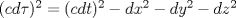
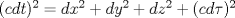
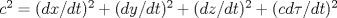
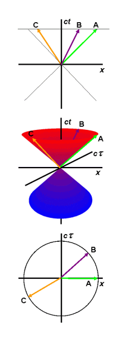

|
Euclidean Relativity (a.k.a. 'proper time physics' or 'proper time geometry')
Relativity theory traditionally uses the Minkowski hyperbolic framework. Euclidean relativity proposes a circular geometry as alternative that uses proper time
as the fourth spatial dimension. Other common elements in Euclidean relativity are the Euclidean (++++) metric as opposed to the traditional Minkowski (+---) or (-+++) metric, and the
universal velocity c for all objects in 4D space-time.
The Euclidean metric is derived from the Minkowski metric by rewriting

into the equivalent
 .
The roles of time t and proper time have switched so that proper time becomes
the coordinate for the 4th spatial dimension. The universal velocity c appears from the regular time derivative
 .
The switch affects all relativistic formulas for displacement, velocity, acceleration and so on in a similar way; invariants are based on t while vector components representing the
4th dimension are based on . Many Euclidean
interpretations introduce time t as a parameter for tracking velocity and change,
while in some articles it is treated as a fifth dimension.
The approach differs from "Wick rotation"
or complex Euclidean relativity. Wick rotation replaces time t by it, which
also yields a positive definite metric but it maintains proper time as the invariant value whereas in Euclidean relativity
becomes a coordinate.
The Euclidean geometry is consistent with Minkowski based relativity. The hyperbolic
Minkowski geometry turns into a rotation in 4D circular geometry where length contraction and time
dilation result from the geometric projection of 4D properties to our 3D space.
The justification for the Euclidean approach is twofold: it makes relativity
accessible in an intuitive way and it opens new opportunities to further develop
relativity theory.
Below are a number of references to articles on Euclidean relativity published
by various authors. Each author approaches the topic in his own way and
individual interpretations were often developed independently without knowledge
of the other authors. First fundamental work came from the Dutch mathematician
Hans Montanus in the beginning of the 90's.
References:
Prof. Robert d'E Atkinson Probably the first exploration of Euclidean relativity in history.
General Relativity in Euclidean Terms (Proceedings of the Royal
Society of London. Series A, Mathematical and Physical Sciences, Volume 272, Issue 1348, pp. 60-78, 02-1963(!)).
Does not yet use proper time as fourth spatial dimension because it only deals with general relativity with stationary
mass particles.
Dr. R. G. Newburgh, Dr. T. E. Phipps US Air Force research paper.
A Space-Proper Time Formulation of Relativistic Geometry (Air Force Cambridge Research Laboratories, Office of Aerospace Research, U.S. Air Force, 1969)
Seems like the first proposal to use proper time as fourth spatial dimension.
See also this document for a complete listing and biography of Dr. Phipps.
Hans Montanus PhD Introduces the difference between
Relative and Absolute Euclidean space-times (REST versus AEST), while he
favors the latter.
Special relativity in an absolute Euclidean Space-Time
(Physics Essays, vol 4, nr 3, 1991)
The Fizeau experiment in an absolute Euclidean Space-time
(Physics Essays, vol 5, nr 4, 1992)
A new concept of time
(Physics Essays, vol 6 nr 4, 1993)
General relativity in an absolute Euclidean space-time
(Physics Essays, vol 8, nr 4, 1995)
Electrodynamics in an absolute Euclidean space-time
(Physics Essays, vol 10, nr 1, 1997)
Arguments against the general theory of relativity and for a flat alternative
(Physics Essays, vol 10 nr 4, 1997)
Compton scattering, pair annihilation, and Pion decay in an absolute Euclidean space-time
(Physics Essays, vol 11, nr 2, 1998)
A Geometrical Explanation for the Deflection of Light
(Physics Essays, vol 11, nr 3, 1998)
Hyperbolic Orbits in an Absolute Euclidean Space-time
(Physics Essays, vol 11 nr 4, 1998)
Proper Time Physics
(PDF) (Hadronic J.22:625-673,1999)
Galactic Rotation and Dark Matter in an Absolute Euclidean Space-time
(Physics Essays, vol 12 nr 2, 1999)
Proper-Time Formulation of Relativistic Dynamics
(Found. Phys. 31, Issue 9, Sep 2001, Pages 1357 - 1400)
Flat Space Gravitation
(Found. Phys. 35, Issue 9, Sep 2005, Pages 1543 - 1562)
Talk at the IARD conference 2004.
Prof.
Jose Almeida An Euclidean extrapolation to general relativity, explaining geodesic motion of objects as a result of
a 4D refractive index, hence the alternative name '4D Optics'. Almeida considers 4D space-time as a Euclidean null-subspace of a 5D space-time
with metric (-++++). The approach allows a treatment of mass particles in 4D
equivalent to photons in 3D, which is supplemented by considering particle worldlines as normals to wavefronts.
An alternative to Minkowski space-time
(arXiv:gr-qc/0104029, 2001)
4-Dimensional optics, an alternative to relativity
(arXiv:gr-qc/0107083, 2001);
A theory of mass and gravity in 4-dimensional optics
(arXiv:physics/0109027, 2001)
K-calculus in 4-dimensional optics
(arXiv:physics/0201002, 2002)
Prospects for unification under 4-dimensional optics
(arXiv:hep-th/0201264, 2002)
Unification of classic and quantum mechanics
(arXiv:physics/0211056 ,2002)
Maxwell's equations in 4-dimensional Euclidean space
(arXiv:physics/0403058, 2004)
Euclidean formulation of general relativity
(arXiv:physics/0406026, 2004)
The null subspace of G(4,1) as source of the main physical theories
(arXiv:physics/0410035, 2004)
Talk at the Moscow conference Number Time Relativity 2004
Talk at the PIRT IX conference Londen 2004.
Choice of the best geometry to explain physics
(arXiv:physics/0510179, 2005)
Monogenic functions in 5-dimensional spacetime used as first principle: gravitational dynamics, electromagnetism and quantum mechanics
(arXiv:physics/0601078, 2006)
How much in the Universe can be explained by geometry?
(arXiv:0801.4089, 2008)
Prof. Alexander Gersten Uses the term 'Mixed Space' to refer to the space where time t and proper time have changed place. Probably the first one to recognize the value of Montanus' work.
Talk at the IARD conference 2002.
Euclidean Special Relativity
(Found. Phys. 33, 2003, Pages 1237-1251)
Dr. Richard Gauthier Also proposes a modification in
the Minkoswki spacetime metric where time t and proper time
change place. The idea originated from a study of the relativistic
energy-momentum components of a theoretical model for the electron being
composed of a circulating spin-1/2 charged photon.
Electrons are spin 1/2 charged photons generating the de Broglie wavelength
(Proceedings of SPIE Vol. 9570 95700D-1, 2015)
Derivation of the Inertial Mass m = E o / c 2 of an Electron Composed of a Circling Spin-1/2 Charged Photon
(web, 2017)
Inertia explained
(web, 2017)
Relativity Simplified
(web, 2017)
Carl Brannen MSc. Emphasis on the geometry and mathematics (geometric or Clifford algebra) that could be used as a basis for Euclidean relativity.
The Proper Time Geometry (pdf, ver 1.0 10/19/2004)
Phase Velocity of de Broglie Waves (pdf, ver 1.0 11/20/2004)
The Geometry of Fermions (pdf, ver 1.01, 10/21/2004)
The Geometric Speed of Light (pdf, ver 1.0 11/07/2004)
Nonlinear Waves on the Geometric Algebra (pdf, ver 1.1 12/02/2004)
Homepage of Carl with various other papers on particle physics.
Dr. Giorgio Fontana Summarizes the results of Montanus, Gersten and Almeida in his first article and extends this with some more speculative thoughts
The Four Space-times Model of Reality
(arXiv.org, physics/0410054A)
Hyperspace for Space Travel,
Video of presentation at the STAIF 2007 by Dr. Eric Davis
(American Institute of Physics, C.P. 880, pp. 1117-1124)
Gravitational Waves in Euclidean Space
(PDF)
(Excerpt from AIP Conference Proceedings 969, 1055 (2008))
On the foundations of Gravitation Inertia and Gravitational Waves
(Scribd) Extending Maxwell's equations to Euclidean relativity in 5D
Towards an Unified Engineering Model for Long (and short?) Range Forces and Wave Propagation
(Powerpoint presentation)
Dr. Anthony Crabbe As an alternative to the traditional Minkowski hyperbolic geometry the author uses 'Circular Function Geometry' (CFG), which is natural for many Euclidean
interpretations of special relativity.
Alternative conventions and geometry for Special Relativity
(Annales de la Fondation Louis de Broglie Vol 29 no 4, 2004)
The Limitations of the Minkowski Model of Space-time
talk at the 13th Triennial Conference of the International Society for the Study of Time (Monterery, CA July 28-Aug 3 2007)
Albert Zur Ph.D. A comprehensive study of four-vectors based
on the characteristic properties of Euclidean relativity in momentum-space.
A Theory of Special Relativity Based on Four-Displacement of Particles Instead of Minkowski Four-Position
(PDF, viXra:1807.0237)
Rob F.J. Van Linden B.Sc.Rob van Linden, van Linden RFJ
Minkowski versus Euclidean 4-vectors
(web, feb 2006) Associating 4-vectors with geometric properties in Euclidean space-time.
Dimensions in Special Relativity. An Euclidean Interpretation
(Galilean Electrodynamics Vol 18 Nr 1, jan/feb 2007) Essentials of the approach in Euclidean relativity.
Momentum Exchange with Radiation in Euclidean Special Relativity
(web, jan 2026) A more efficient approach in exchanging momentum between massive particles and photons is described. It uses principles of 4D momentum
that follow from Euclidean special relativity and may have implications for radiation-based propulsion.
Relativity Simplified Simplified and popularized description of the essentials of Euclidean relativity.
The Universe as a Multi-Dimensional Fractal
Speculative description of a fractal-like universe,
based on the geometry of Euclidean relativity. It suggests a hierarchical ordering of the four forces of Nature together with
their fermions and bosons through their number of dimensions and provides answers to the expansion of the universe and its missing mass.
Dr. Phillips V. Bradford Characteristic elements of Euclidean relativity, using proper time and universal velocity c for all objects in space-time.
Alternative ways of looking at physics, with amongst others
A space-time, geometric interpretation of the beta factor in Special Relativity.
Richard D. Stafford Ph.D., Resolution of the Relativity/Quantum Mechanics Conflict
(on Web Archive) Uses Euclidean space-time with as fourth dimension to solve a common problem with the perception of reality.
Radovan Machotka Ph.D.
Shows that four-dimensional Euclidean space allows explanation of known relativistic effects that are now explained in pseudo-Euclidean spacetime by Einstein's Special Theory of Relativity.
Euclidean Model of Space and Time (Journal of Modern Physics 9, 1215-1249, may 2018)
Common theoretical framework of modern physics in five dimensions. Cosmology on Small Scales (Prague: Institute of Mathematics Czech Academy of Sciences, 2026. p. 229.ISBN: 978-80-85823-75-2) Explains spectrum of particle rest masses, particle electric charge, particle spin and matter - antimatter duality.
The Euclidean model of space and time, and the wave nature of matter (Frontiers in Physics, 2025, vol. 13, iss. 13-2025, p. 1-13. ISSN: 2296-424X) Can serve as a common basis for relativity and quantum mechanics.
Concept of quantum wave gravitation in the Euclidean model of space and time ( Frontiers in Physics, 2026, vol. 14, iss. February, p. 1-16) Explains gravitation in flat Euclidean space
Vu B Ho Advanced Study, 9 Adela Court, Mulgrave, Victoria 3170, Australia, Euclidean Relativity
(web)
Presents in more details the formulation of Euclidean relativity.
Prof. Dr. Markolf H. Niemz
Founding Physics on a Mathematical Background Reality (Preprints 2022, 2022070399).
(Preprints 2022, 2022070399). Shows that physical realities are projections of a mathematical background reality (4D Euclidean space). Without gravity, an observer’s spacetime
is Minkowski-like. As in general relativity, gravity in Euclidean relativity is the curvature of spacetime. Niemz’ formulation of Euclidean relativity predicts previously unpredicted
phenomena (time’s arrow, Hubble tension), and it provides simpler explanations for already predicted phenomena (relativistic effects, galactic motion, quantum entanglement).
Niemz points out that his formulation manages without cosmic inflation, expanding space, dark energy, and non-locality.
Dr. Takuya Yamashita
Theoretical evidence for principles of special relativity based on isotropic and uniform four-dimensional space
(Preprints 2023, 2023051785). The author explains
relativistic phenomena and the concept of time by introducing a
4-dimensional real space with regular time t as parameter to derive
velocities and displacements therein. The fourth spatial dimension
corresponds to proper time in classical
special relativity, as is common in similar articles on Euclidean
relativity.
Wenhui Zheng B.Sc.
A Euclidean geometric model that has a maximum speed c
(Physics Essays Vol. 36, Nr 1, March 2023, pp. 117-122).
Another proposal for a standard Euclidean geometric model that explains the constant speed c and the geometric mechanism that causes time dilation and length contraction effects.
It uses a new coordinate transformation and velocity addition formula that is consistent with the Michelson–Morley experiment and the linear Sagnac experiment.
Prof. Dr. Alain Kirèche
Equivalent Euclidean formulation of special relativity - Aplication to the lifetime of particles
(Le Bulletin de l'Union des Professeurs de Physique et de Chimie, 2022, 116 (1048), pp.1001-1014).
Translation of the article by Alain Kirèche under the title: Formulation euclidienne équivalente de la relativité restreinte - Application au temps de vie des particules
Philip Asquith
Introduces the Symmetrical Reflected Radar Model (SRRM), combining k-calculus with symmetric spacetime diagrams to reproduce relativistic relationships in a Euclidean geometric framework.
In contrast to the more general, conceptual discussion of the Euclidean metric presented above, his papers provide a concrete geometrical construction based on radar coordinates and symmetry,
offering an alternative interpretation of spacetime structure.
A Symmetrical Reflected Radar Model of Special Relativity using Euclidian Geometry (PDF, viXra:2504:0064, 2025).
On the Definition of Velocity and the Geometry of Special Relativity (Preprints 2025, 2025052272).
Other papers written by the author on the same subject are listed at The General Science journal:
The Symmetry of Relative Motion (2004, revised 2021)
Proper Velocity is the Fundamental Measure of Relative Motion (2021)
Dr. Elliot McGucken
Refers to the basic principles of Euclidean Relativity with the terms The McGucken principle or The McGucken geometry, where the fourth dimension is expanding at the velocity of light dx4/dt = ic.
Personal website of Dr. McGucken with various articles
Note on articles by Dr. Frans-Guenter Winkler (ResearchGate,
arXiv): although the same terms Euclidean special and general relativity are used, the
geometry of the model is different. It maintains t as fourth dimension and as invariant, yet uses a (++++)
metric. The approach falls outside the scope of this page.
|
|
|

Hans Montanus' visualization of the relation between Minkowski and Euclidean diagrams (From: Proper Time Physics, Hadronic Journal 22, 625-673, 1999)
|
|
Books:
Lewis Carroll Epstein Relativity Visualized (Insight Press 1981) A popular explanation of special relativity using concepts of Euclidean relativity.
Brian Greene The Fabric of the Cosmos: Space, Time, and the Texture of Reality (Knopf New York 2004)
Typical elements of Euclidean Relativity are used at various places in the book to explain relativistic effects.
Thomas W. Sills What Einstein did not see (Dearborn Resources 2009)
Introduces proper time as fourth dimension and uses circular diagrams for velocities in space and time.
David Eckstein Epstein Explains Einstein (free ebook 2009)
An explanation of Epstein's book.
Hans Montanus Proper Time as Fourth Coordinate (free ebook 2023)
A compilation of Montanus' previous work with latest additions and insights.
Philip Asquith The Velocity Assumption (Kindle ASIN B09MDQRQ4X 2021)
On the Symmetrical Reflected Radar Model (SRRM), see also the list of other papers of Philip Asquith above.
|
5D Space-Time-Matter consortium, formerly coördinated by the late Prof. Paul Wesson.
Not so much identifiable as Euclidean relativity but proposals very similar to
the ideas in it regarding the application of a fifth dimension, based on the
Campbell-Magaard embedding theorem.
A quote from an article of Paul Wesson,
In Defense of Campbell's Theorem as a Frame for New Physics
(arXiv.org gr-qc/0507107, July 25th 2005)
reflects one of the key elements in van Linden's article "The Universe as a Multi-Dimensional Fractal" :
"The implication of this for particles is clear: they should travel on null 5D geodesics. This idea has recently been taken up in the literature, and has a
considerable future. It means that what we perceive as massive particles in 4D are akin to photons in 5D."
This site is maintained by Rob van Linden
(rob@vlinden.com). Updated April 2026.
|